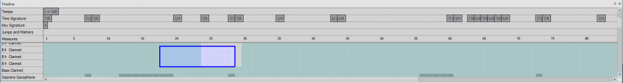
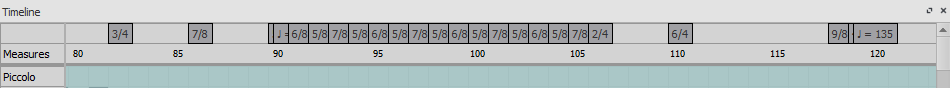
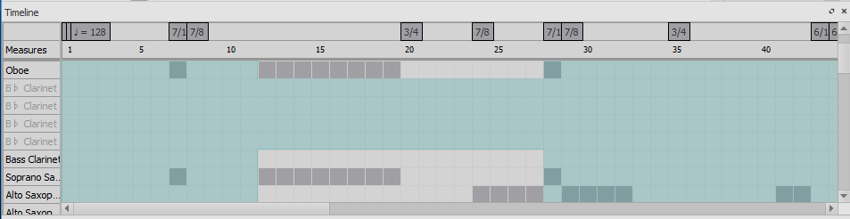

时间线
概述
时间线是一种显示在程序窗口底部的导航辅助工具，可让您逐小节了解乐器和主要结构元素的概览。您可以通过单击小节或结构元素轻松地在乐谱中移动。
时间线由四个部分组成：
元数据标签
位于时间线的左上角。这些是元数据行的名称。
乐器标签
位于时间线的左下角。这些是主网格中各行的名称。
元数据行
位于时间线的右上角。这些保存乐谱的元数据值。
主网格
位于时间线的右下角。它包含多个“单元格”（乐谱中特定的小节和谱表，以方格表示）。
元数据元素
元数据元素是乐谱中不是音符但仍对乐谱很重要的元素，例如调号、拍号、速度、排练标记、小节线以及跳转和标记。

基本交互
选择一个小节
要在时间线中选择一个小节，请在单元格上按下鼠标按钮。所选单元格周围会出现一个蓝色框，乐谱中相应的小节也会被选中。乐谱视图会将所选小节置于视图中。
选择多个小节
拖动选择
按住 Shift 并按住鼠标左键，在主网格上拖动鼠标，将创建一个选择框。松开鼠标按钮后，选择框下方的所有单元格以及乐谱中的所有相应小节都将被选中。
Shift 选择
如果已经选中一个单元格，按住 Shift 并在时间线中选择另一个单元格，会将选择范围延伸到该新单元格，类似于乐谱中的操作。
Ctrl 选择
如果当前没有选中任何单元格，按住 Ctrl 并选择一个单元格将选中整个小节。
清除选择
要清除选择，按住 Ctrl 并单击网格或元数据行上的任意位置，将清除任何当前选择。
元数据值选择
在时间线上选择元数据值将尝试在乐谱中选择相应的元数据值。
滚动
标准滚动
向上或向下滚动鼠标滚轮将分别向下或向上移动网格和乐器标签。元数据标签和行不移动。
Shift 滚动
按住 Shift 并向上或向下滚动鼠标滚轮将分别向左或向右移动网格和元数据行。元数据标签和乐器标签不移动。
Alt 滚动
按住 Alt 并向上或向下滚动鼠标滚轮将分别向左或向右移动网格和元数据行，速度比 Shift 滚动更快。元数据标签和乐器标签不移动。
拖动
要拖动时间线的内容，按住鼠标左键并四处移动。
标签交互
重新排列元数据标签
除小节元数据外，所有元数据标签都可以以任何方式重新排列。将鼠标光标移到其中一个元数据标签上时，会出现小的上下箭头。单击上箭头的鼠标左键可将该元数据标签与它上方的标签交换。单击下箭头的鼠标左键可将该元数据标签与它下方的标签交换。
折叠元数据标签
要在时间线上保留所有元数据信息的同时隐藏所有元数据标签，请单击小节元数据上的鼠标左键，将所有当前可见的元数据行折叠为一行，其中元数据值在该行中交错排列。再次单击小节元数据上的鼠标左键即可展开元数据行。

隐藏乐器
所有乐器——无论隐藏与否——都会显示在时间线上。要开始此交互，将鼠标光标移到乐器标签上。标签右侧会出现一个小眼睛图标：如果该乐器在乐谱上可见，则眼睛睁开；如果乐器被隐藏，则眼睛闭合。单击眼睛上的鼠标左键可在两个选项之间切换。

缩放
要放大或缩小乐谱，按住 Ctrl 并分别向上或向下滚动鼠标滚轮（Mac：Cmd + 滚动）。